clique aqui

clique aqui
clique aqui
Revelado!!! Série 8900 {Frota A} em breve
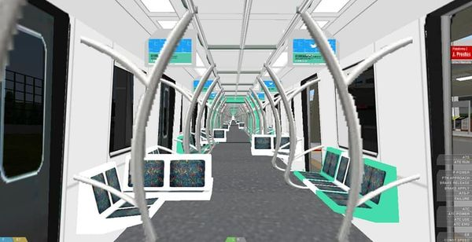 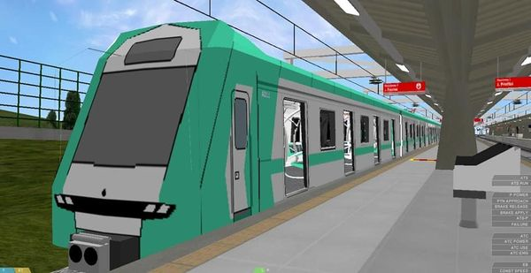 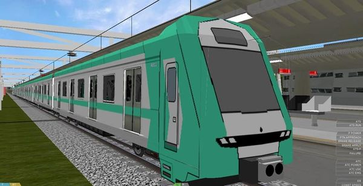 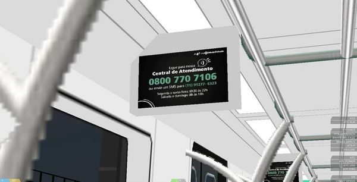Anunciamos hoje que a a conta do YouTube do Mr Frota P, que recentemente vinha roubando trens da HRB, foi suspensa hoje dia 5 de Agosto de 2022. (Foto de Italo Silva)
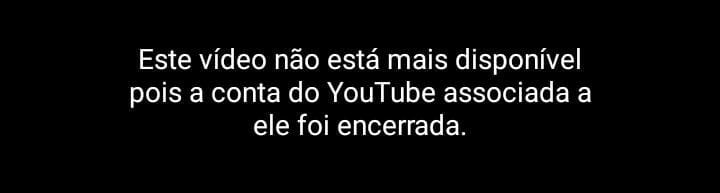Lançamento Galera!!!
Oque será ?
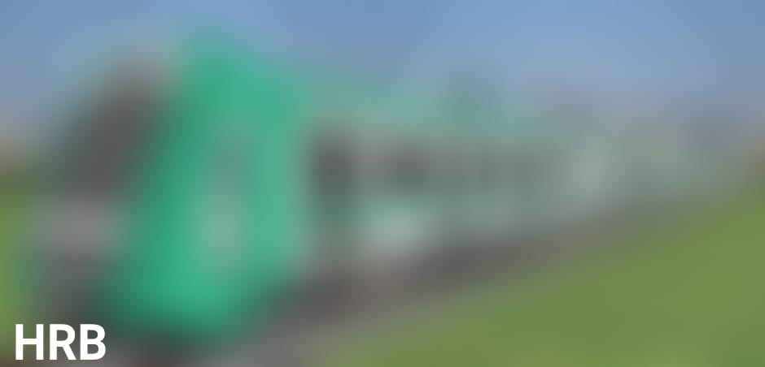Bom, nem sei como começar esse texto... Mais... acho que um ciclo meu está terminando. Não é por minha conta, mais por conta de 25% do pessoal que assiste o meu canal. Já faz alguns meses que venho dizer sobre as coisas do Hmmsim mais infelizmente não tá dando pra continuar nessa comunidade. Mesmo com a lei 9.610 ativa, não estou dando conta de administrar os trens e ver se tudo está saindo correto como deveria. 75% da comunidade do Hmmsim está conseguindo acabar com as minhas esperanças de continuar projetos pela HRB. Não sei se migrarei pro OpenBVE, PBS não é o forte do Canal e Spotter tb não. Eu só queria estar longe de certas pessoas que estão acabando com a vida do Mr Mafersa RJ que nada mais, nada menos é um personagem no mundo Ferroviário. Eu, Pedro Henrique estava querendo acabar com o canal por causa dessas certas pessoas, mais o que me motiva ainda a ficar de pé são pessoas que vem nos vídeos reais de trens comentando "pô legal, belo registro" e os que me tiram do sério ou me deixam triste são pessoas que vem nos vídeos de Hmmsim comentar "Cadê o link?", "Manda pra mim no privado", "Vai lançar quanto?". Isso me desmotiva demais ao ponto de não querer mexer. Mesma coisa com pessoas que baixam os trens da HRB, edita sem permissão e lança como se fosse dele. Digamos que eu sou praticamente um dos maiores canal de Hmmsim ativo no YouTube, Já pararam pra pensar como ficaria o Hmmsim 2 depois que eu sair do ramo do Hmmsim? como ficaria? quem q vai trazer mais lançamentos? Quem que vai melhorar o Hmmsim? Enfim, esse é o meu desabafo não como Mr Mafersa RJ e sim como Pedro Henrique... Espero que realmente entendam o que estou passando com certas pessoas e o que eu pensei.
"Já tem gente pedindo pra modificar a Linha 11 que a HRB tá fazendo. Só esclarecendo que não vamos passar muitas informações de progresso daqui por diante, e não vamos autorizar modificações. No caso de alguém tentar isso, os arquivos estarão ocultos e inacessíveis, ninguém vai conseguir editar nada"
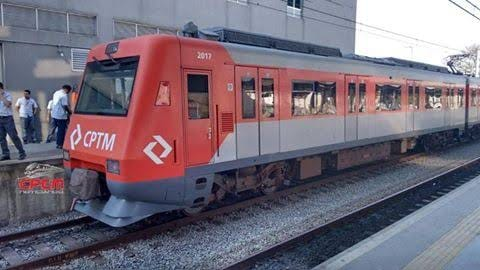Um pouco da diferença de edições de uma pessoa meramente porca feita em menos de 1 hora e de uma pessoa que levou dias(no caso eu) procurando detalhes na pasta do Frota A da Mega Rail Brasil com autorização.
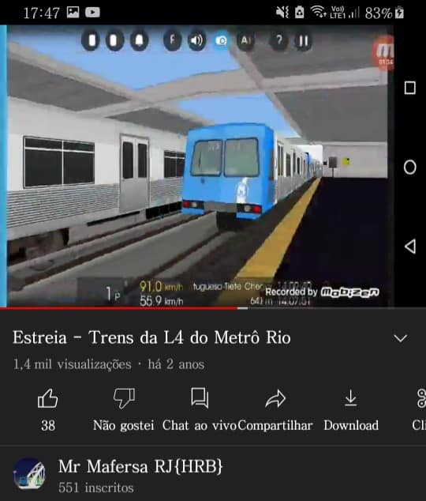 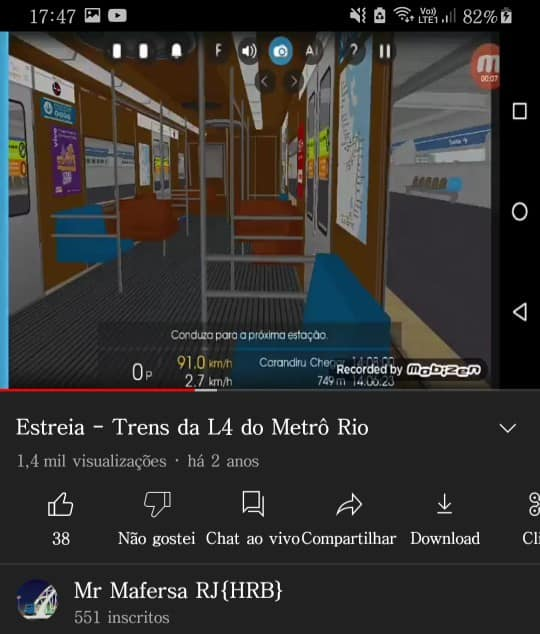 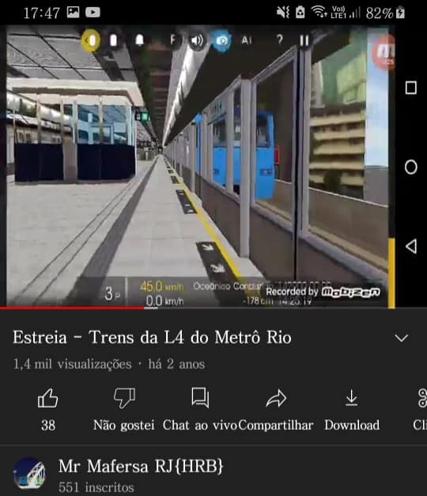 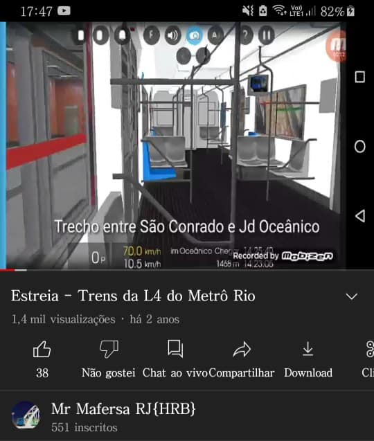 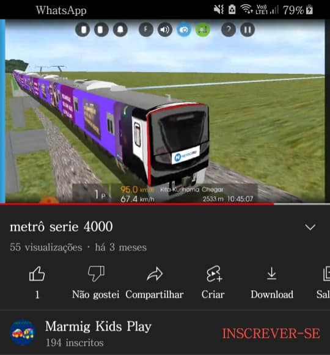 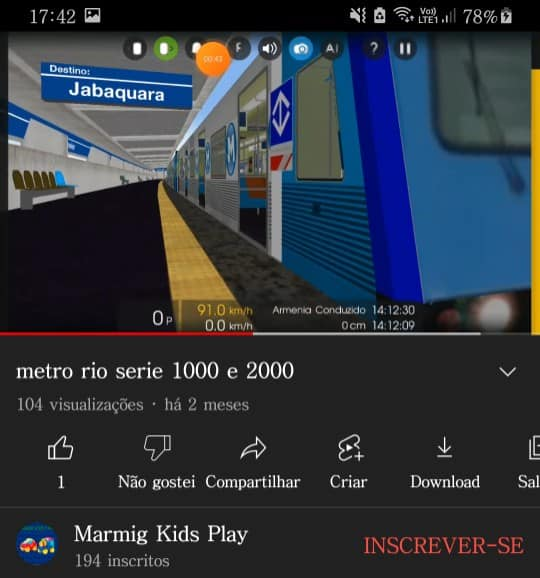
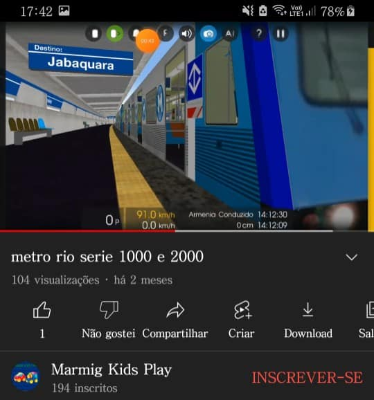
Estão tendo altos lançamentos vindos de outras equipes secundárias com exceção da HCB e HRB. 7500, 8500, tudo do Diego Henrique , pessoal da OCB e Fepasinha. Ultimamente apareceu o CNR 4000 do Metrô Rio convertido e editado sem a permissão da equipe. Os próximos lançamentos que virão no canal terá a Lei 9.610 aplicada judicialmente e acionarei assim que ver alguém editando sem permissão. Lei 9.610: Foi criada para regular os direitos autorais tanto artístico quanto acadêmicos. Segundo o código penal(Artigo 184), O Plagiador está sujeito à multa e até a detenção, de até 3 meses a 1 ano. Nota de Repúdio Hmmsim Rail Brasil. Mr Mafersa RJ, 2022 Copyright©HRB Brasil, 2022
Uma prévia de como está o andamento do CNR 4000 V HRB melhorando o seu Hmmsim!!! Copyright©HRB Brasil, 2022
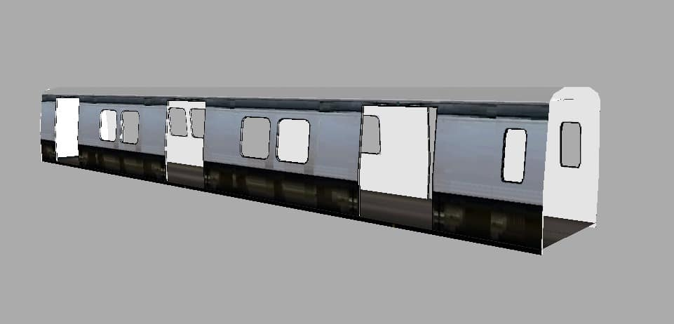 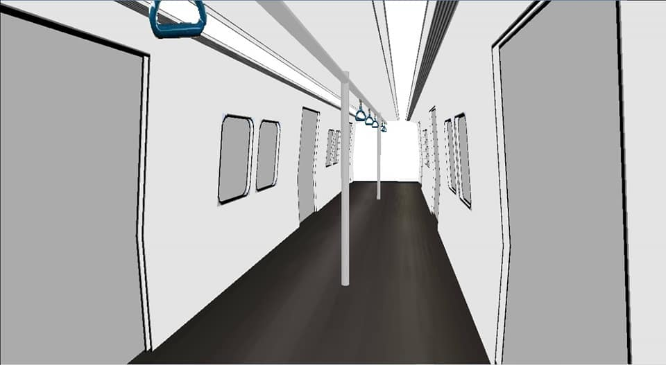 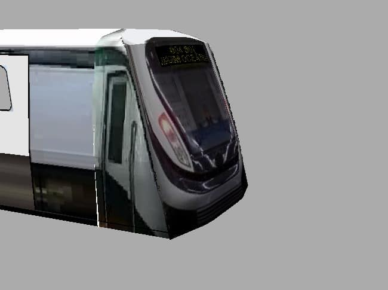Do Lixo ao Luxo - Estação Praça Onze. Praça Onze ganhando forma tendo em si alguns bugs que serão corrigidos antes do lançamento da rota. Essa rota está com o traçado de Uruguai até Jardim Oceânico, ou seja, Irá demorar pra ser lançada pois há muitas estações pela frente e tudo será modelado do 0. HRB melhorando o seu Hmmsim!!!! Copyright©HRB Brasil, 2022
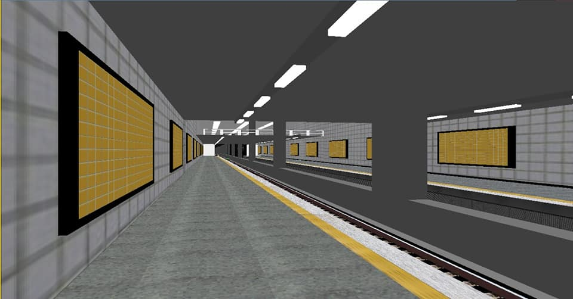 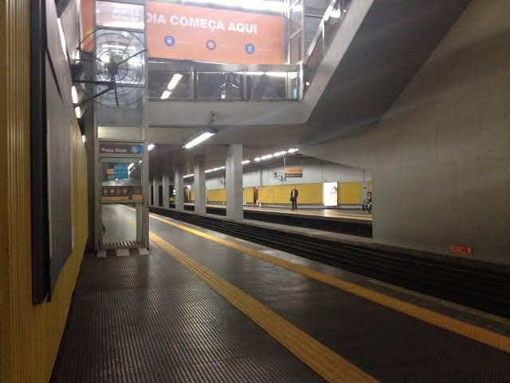Fala Galera, beleza? Hoje trago um status de como está ficando a Linha 1 do Metrô Rio. Estação Saens Pena finalizada e São Francisco Xavier também finalizada. Já iniciamos a Estação Afonso Pena e o projeto está a todo vapor. *HRB fazendo seu Hmmsim melhor!* Copyright©HRB Brasil, 2022
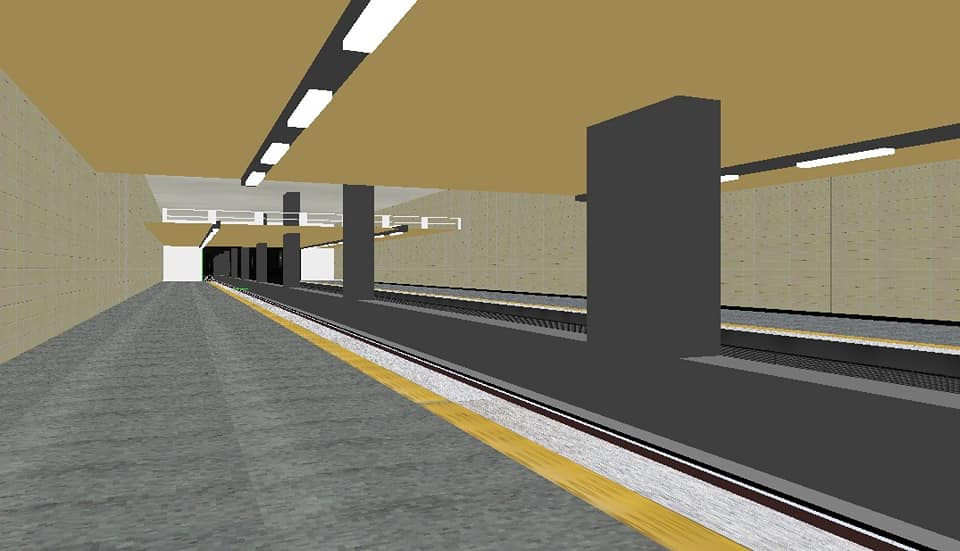 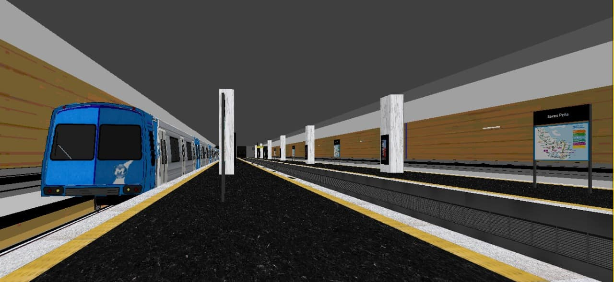 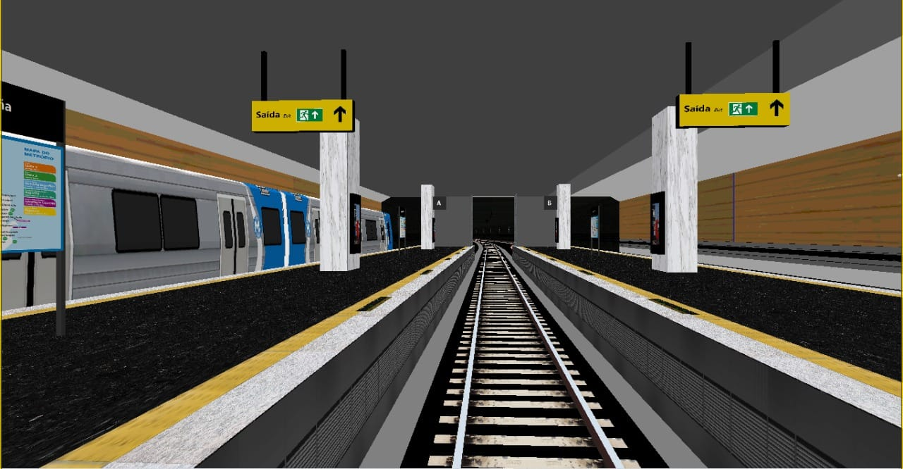
Fala galera, Estação Saens Pena ganhando forma, A partir de hoje, a Linha 1 Laranja é oficialmente a mais importante da HRB. *HRB Faz, A inveja cresce* Baixe rotas e trens totalmente oficiais da HRB, não baixe as pirata, Pirataria é crime. 100% original 100% HRB 100% Nosso Copyright©HRB Brasil, 2022
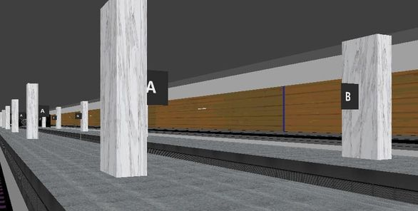 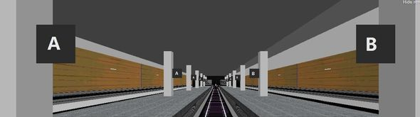status 50% por ai FAZ MELHOR! Lembrando sempre, para ninguém esquecer. "HRB faz, o resto admira" a concorrência choraaaaaaaa (não poderá converter pro hmmsim, a mesma vai ser lançada pra openbve e hmmsim.) (sem vagas na equipe)
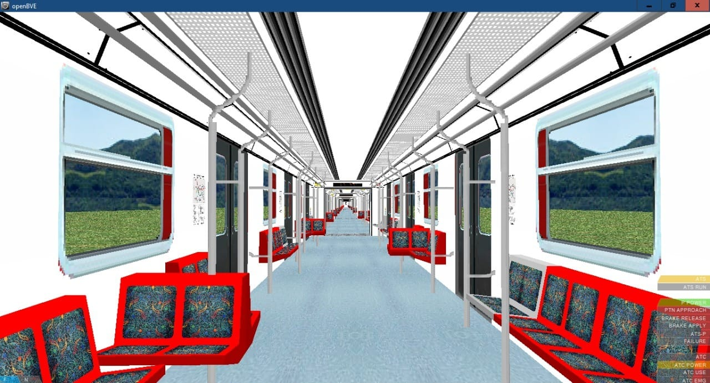 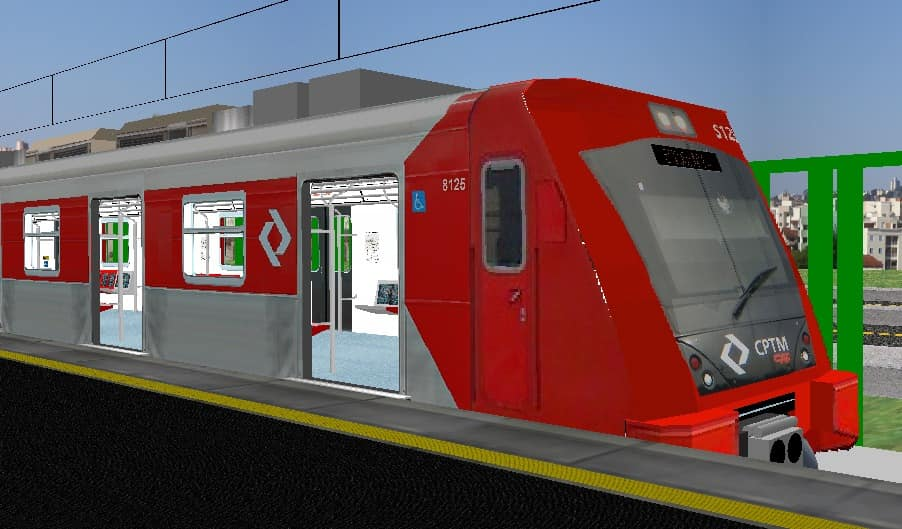 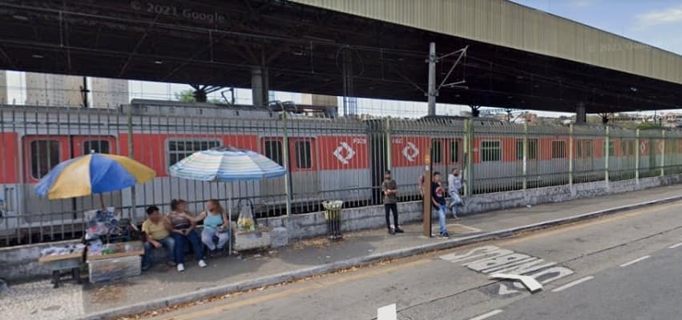 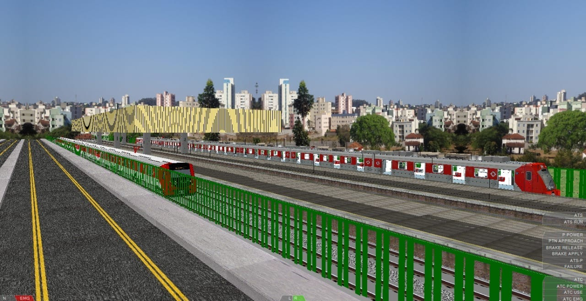status 50% por ai FAZ MELHOR! Lembrando sempre, para ninguém esquecer. "HRB faz, o resto admira" a concorrência choraaaaaaaa (não poderá converter pro hmmsim, a mesma vai ser lançada pra openbve e hmmsim.) (sem vagas na equipe)
Opa galera boa tarde estamos aqui com um novo progeto para o openbve feito pelo nosso Molder Speedy o série 8000 {S128} se liga só nesses detalhes
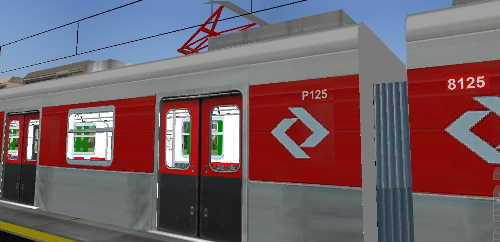 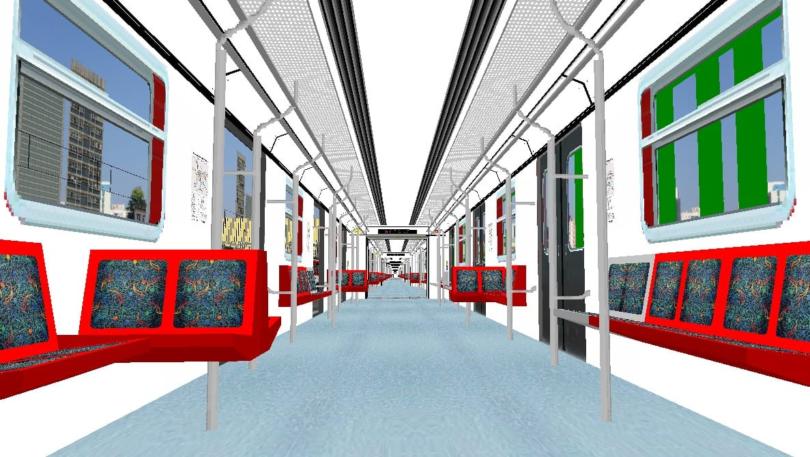 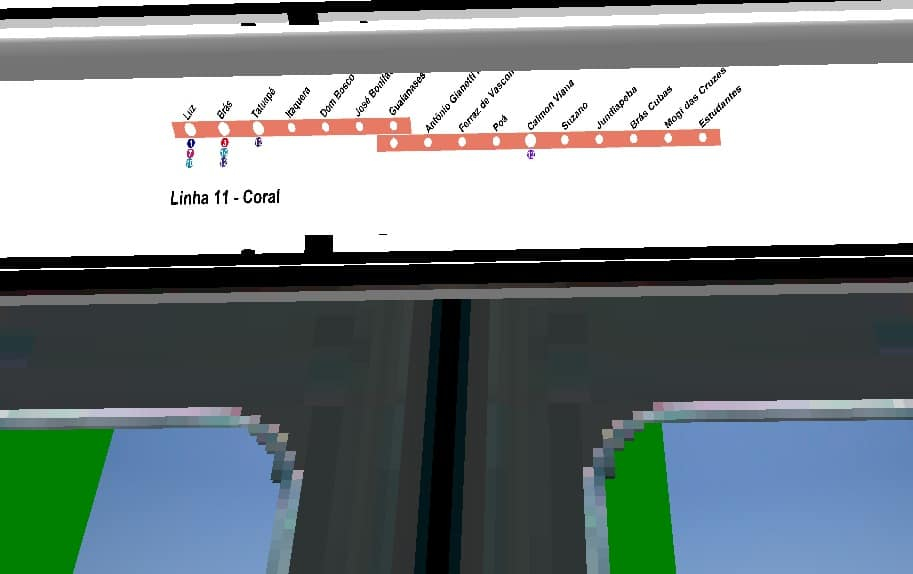Opa galera bom dia estou compartilhando com vcs um novo Projeto o Q088 "Padrão Via Mobilidade" espero q gostem (O Q088 está assim na vida real
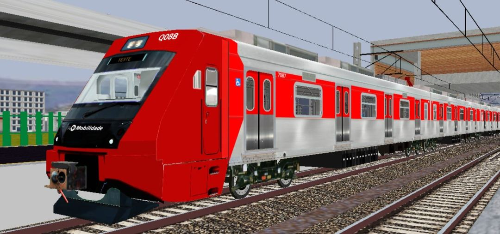
Achou q paramos de mecher no C43? Agora está mais Realista estamos fazendo de tudo para q ele fique o mais Realista possível 😄
Acompanhe a página para mais novidades
Ass:Italo Silva
Fala galera, estamos trazendo o famoso Misto do Metrô Rio pra vocês.
Este trem tem duas máscaras diferentes, primeiro trem do Hmmsim com modelo de máscaras diferentes para o seu jogo, de um lado temos a Máscara do Mafersa e do outro lado temos a máscara do Alstom.
#L1MetroRioHmmsim
HRB Evolui, Concorrência Diminui
Não baixe cópias, aqui na HRB os projetos são 100% originais e com modelagem 100% própria.
© Copyright HRB Brasil, 2022
Fala galera, Uma prévia de como está ficando a Estação Estácio já com alguns adesivos posicionados de propaganda e abertura pra escada de saída e entrada na plataforma, juntamente com os novos sons do Mafersa Série 1000 do Metrô Rio agora sendo feito a todo vapor. #L1MetrôRioHmmsim
Salve Salve galera, uma prévia doq estou preparando ksks Copyright©HRB Brasil, 2022
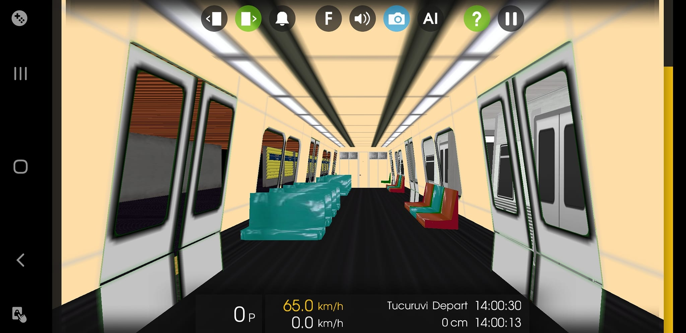 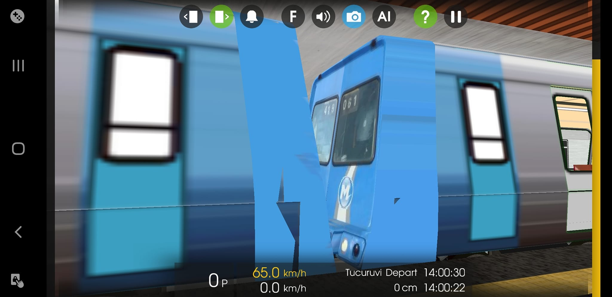Linha 5 Lilás tomando forma. Autorização - OpenBVE Modernizações

fala rapaziada ! tudo certo? entao, hoje a HRB ganha 2 novos membros para ajudar o ritmo da equipe, ambos passaram na prova e ficaram na media 90/100 ou 95/100. sejam bem vindos (Mr Frota F) e (Mr D588) !!! Ass: Gui Frota H
E quem disse que abandonamos o Projeto da L1 Rio? Estamos a todo vapor na Linha 1 Laranja do Metrô Rio, já foi posicionado o teto e os pilares da estação. Em Breve, mais novidades.

Fala Galera, hoje trago uma surpresinha pra vocês que em breve irá ser disponibilizado. HRB Evolui, Concorrência diminui e baba ovos aumenta.
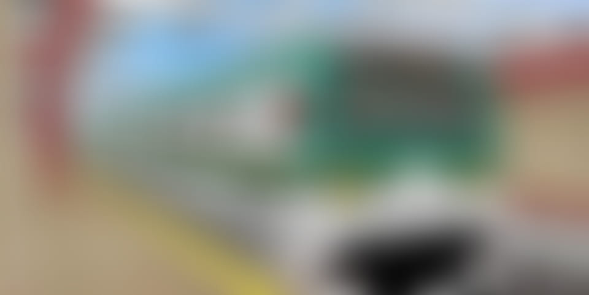bm dia :D sabe a tão esperada L5 MDZ? então temos a autorização bê já começamos os trabalhos com conversões de trens e rotas não peça, não está pronta! ai vai uma fotinha sexy 😏


Fala galera, hoje venho trazer um 9500 da CCR Fictício, ainda faltam poucas coisas, e quem sabe, terá lançamento deles? Fiquem ligados aqui na página para novas novidades!!! Pedro Mafersa.
Salve galera, pela infelicidade de muitos e felicidade de outros, Ramal Saracuruna Versão 3 + Realismo está temporariamente adiado a continuação do desenvolvimento da rota para dar a preferência da Linha 1 Laranja do Metrô Rio que ligará Uruguai até General Osório. Como muitos estão ansiosos pelo mesmo, o Mafersa Série 1000 está 95% dos sons prontos, Alstom Série 2000 está com 75% dos sons prontos e o CNR Série 4000 está pronto só dando uns ajustes nas texturas. Sobre os status da linha, está cerca de 35% pronta já com os Avisos Sonoros prontos e posicionados. Ass: Pedro Mafersa
Lançamento novo galera!! Série 2500 Animado Feito por Leonardo Santos Convertida pela equipe Rota feita por Wellington Arantes Convertida pela Equipe Link do download da descrição:
fala rapaziada ! tudo certo?
entao, hoje a HRB ganha 2 novos membros para ajudar o ritmo da equipe, ambos passaram na prova e ficaram na media 90/100 ou 95/100.
sejam bem vindos (Mr Frota F) e (Mr D588) !!!
Ass: Gui Frota H
Uma prévia de como está o Mafersa Série 1000
Salve galera, pela infelicidade de muitos e felicidade de outros, Ramal Saracuruna Versão 3 + Realismo está temporariamente adiado a continuação do desenvolvimento da rota para dar a preferência da Linha 1 Laranja do Metrô Rio que ligará Uruguai até General Osório. Como muitos estão ansiosos pelo mesmo, o Mafersa Série 1000 está 95% dos sons prontos, Alstom Série 2000 está com 75% dos sons prontos e o CNR Série 4000 está pronto só dando uns ajustes nas texturas. Sobre os status da linha, está cerca de 35% pronta já com os Avisos Sonoros prontos e posicionados. Ass: Pedro Mafersa
Fala Galera, eu sei que outubro tá chegando ao fim, mais em breve irei lançar a Linha 1 Azul com os PA's Infantis. Vocês apoiam o lançamento ou querem ver o novo Ramal Saracuruna V3 e cancelar a Linha 1 Azul com PA's Infantis? Fica a critério de vocês!
Fala galera, depois de algum tempo, venho mostrar um pouco de nossos projetos de como estão ficando, temos o Bombardier Innovia 300, famoso Frota M que está em processo final de remoção de bugs, temos o CAF Série 5000 do Metrô Rio que está em processo final de adaptação de sons, temos portas de plataformas criadas do 0 pelo modder da HRB Leonardo Santos e o mais esperado, o Ramal Saracuruna V3, está com poucos bugs que serão arrumados e está em fase final a conversão e edição do 5000 para logo em seguida começar o Série 4000. Ambos virão no Ramal Saracuruna V3.
 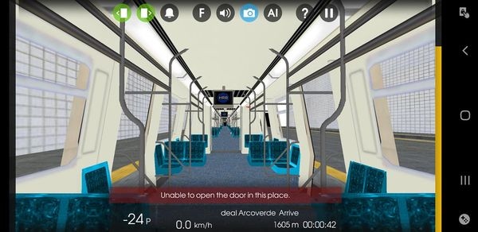
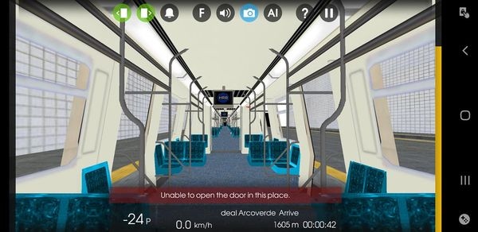


Olá pessoal! Tudo bem? Mais uma Novidade! Toei 5500, Em breve Será Lançado em uma nova Linha Da Keikyu, no momento estou trabalhando no som da Desaceleração.
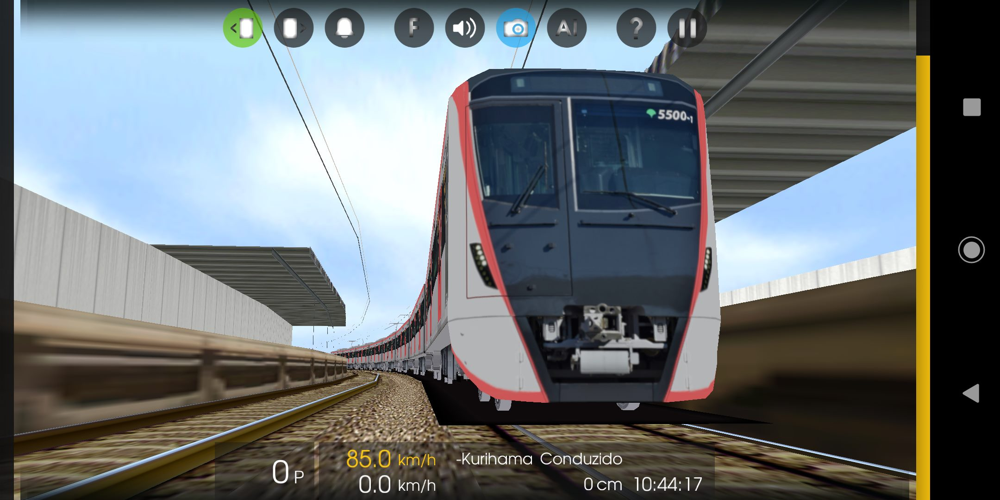Ramal Saracuruna v3? Pra Hmmsim?Em breve..
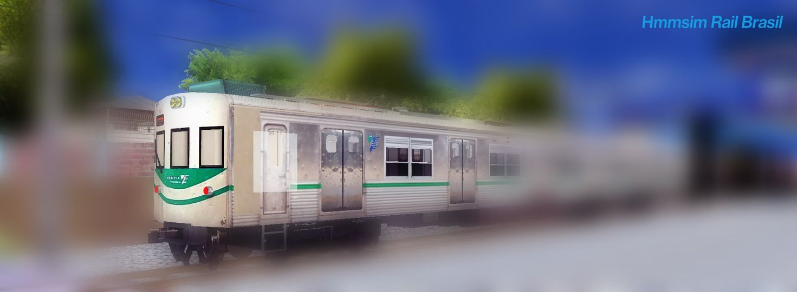E aí galera, querem que eu faça as pinturas do Metrô Rio tanto Mafersa quanto Alstom nos modelos novos para lançar em breve na Linha 1? Deixem nos comentários que lerei todos.
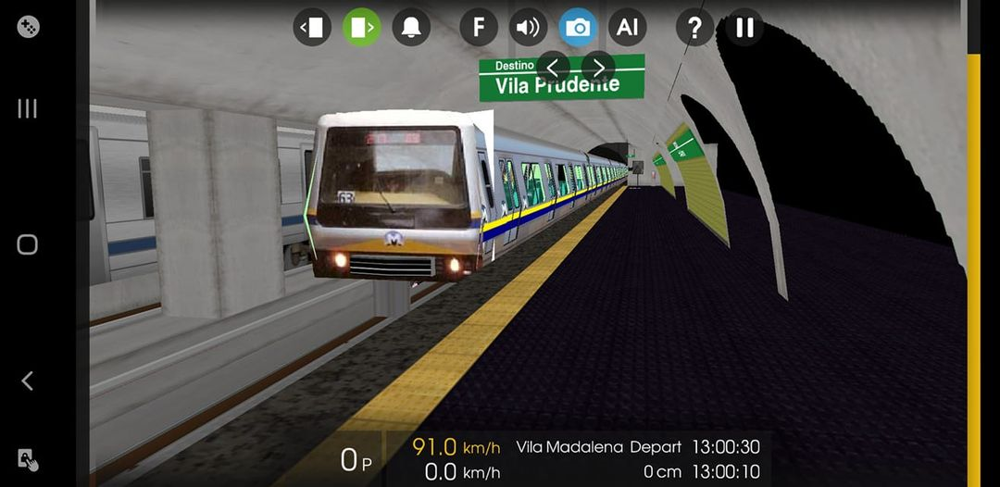O novo Série 500 para o Ramal Saracuruna v3! Agora ele tem Animação e Visão de Cabine!
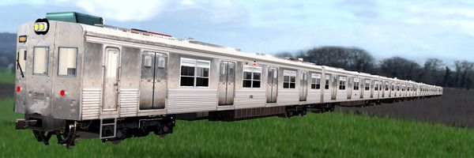 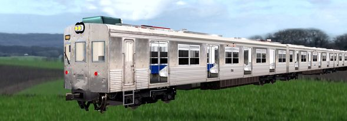
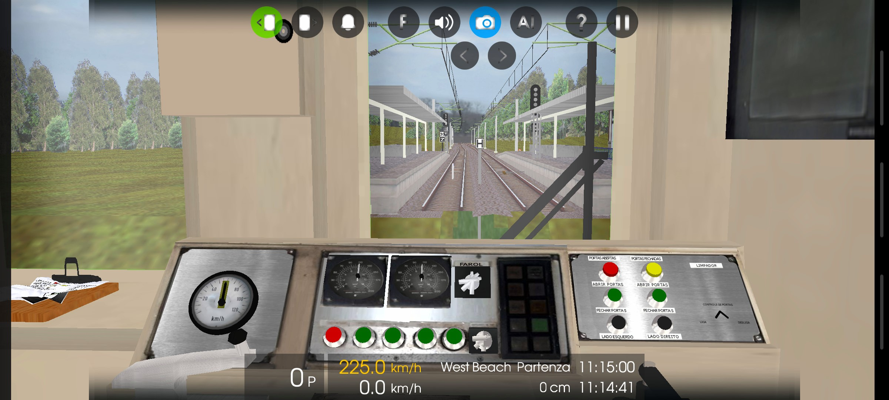
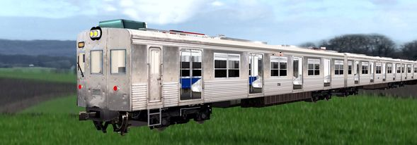
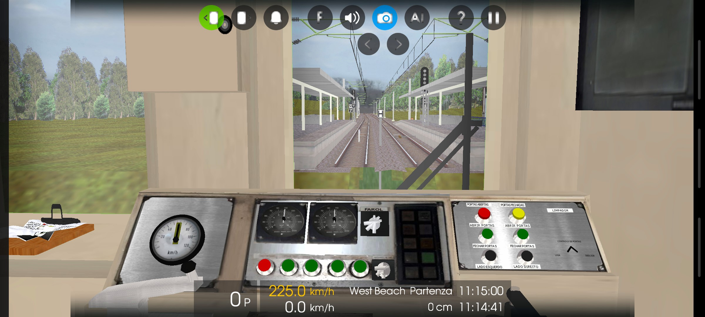
Novidade saindo quentinha do forno, mais novo Série 500 recém lançado pela OCB já convertido pela HRB com autorização da OpenBVECriaçõesBrasil. O trem virá no futuro Ramal Saracuruna V3.
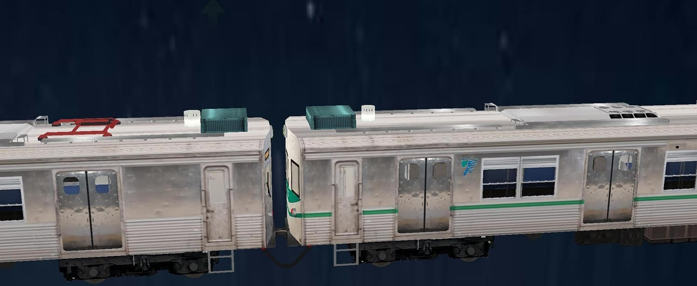 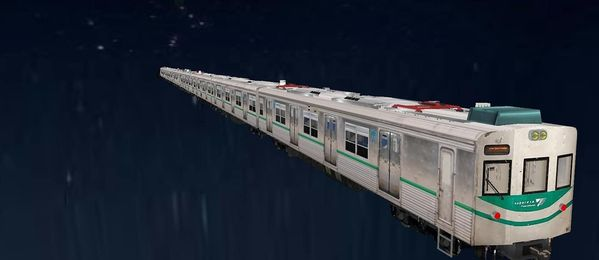 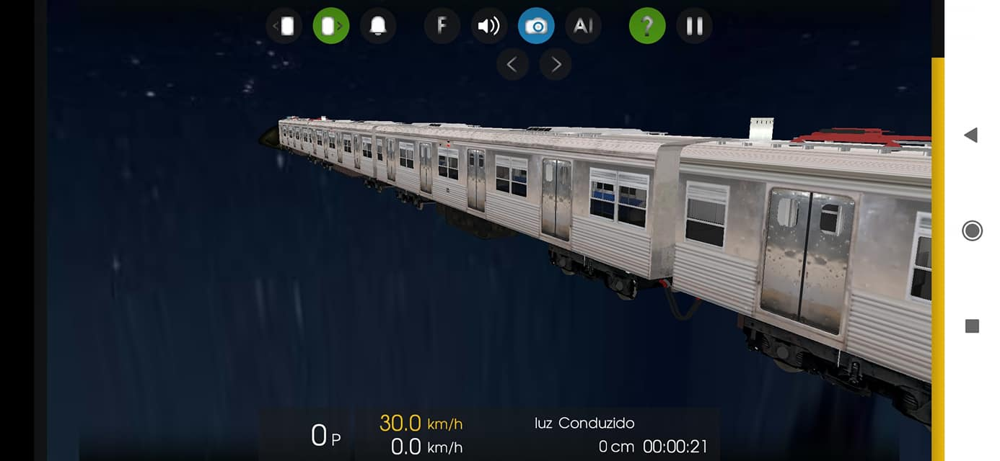 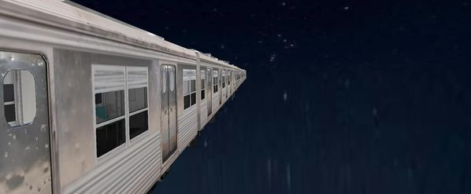Fala Galera! Mais um Internacional, O Keikyu 600 Blue Sky, está quase sendo finalizado, vai ser Lançado em breve, fiquem atentos no canal:
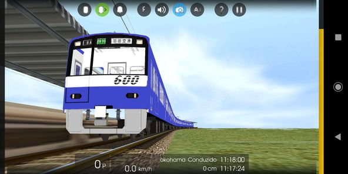Que tal um projetinho internacional? Foi animado o trem Kawasaki C651 212/213 de Singapura. Em breve para download!!!
Achou que a gente tinha parado? Estação Uruguai ganhando forma, foi trocado a parede e as pilastra, já no CNR Série 4000 foi feito a mudança de sons e deixado o mais realista possível.
E aí pessoal, primeiro status pra vcs! Alstom/Mafersa pronto para Openbve e em breve será convertido para Hmmsim!
E aí galera, de boa? Ansiosos pro Ramal Saracuruna V2? Mas hoje não venho trazer status da linha e sim do CNR 3000, foi convertido do OpenBVE, ainda está sem animação, logo logo tratei mais um trem sensacional que está sendo editado por um de nossos membros. Em breve, iremos disponibilizar o download do Ramal Saracuruna v2 + um Pack de trens. Aguardem novas novidades!
Temos Mafersa Série 1000 do Metrô Rio pro OpenBVE e em breve teremos para o Hmmsim
HRB - Hmmsim Rail Brasil ! Alstom 5000 V2 animado! Em fase de [beta] !!! Em breve para seu Hmmsim!